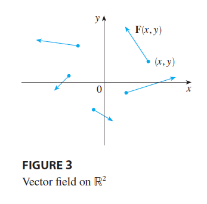
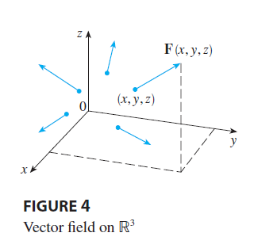
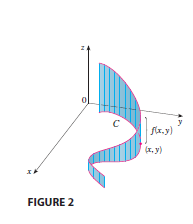
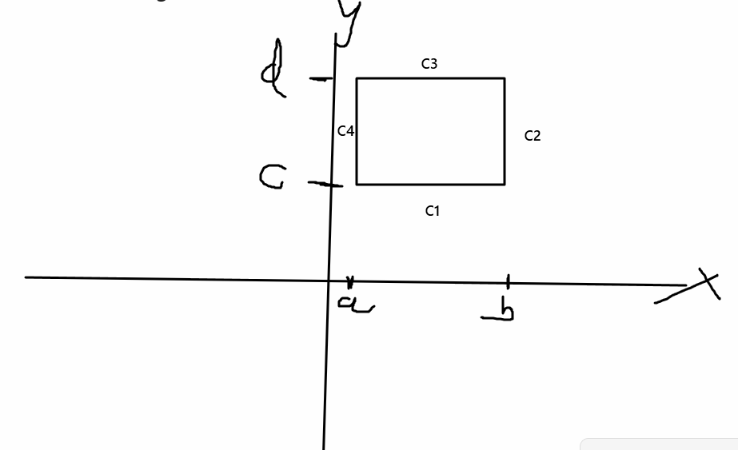
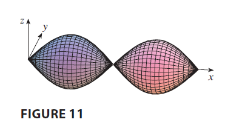
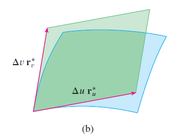
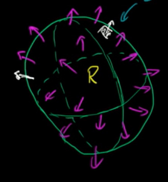

Copyright all rights reserved by Aaron Zheng. This work may not be distributed by anyone without the express consent of the author, who is Aaron Zheng.
Introduction¶
Information is all around us. For example, sometimes, different people may own different things, and may have different hobbies, etc. In practice, such information is pretty hard to mathematically model. But, when such information includes both a magnitude and a direction, we can sometimes use a math tool to help us, vectors.
In the 2D world, the application of such tool can be seen in the description of gradient fields of altitude curves. For example, each point on the vector field corresponds to a vector which tells of the direction of steepest ascent, and the slope of the ascent.
In the 3D world, the application of such tools can be seen in the description of certain fields, most notably the electromagnetic, gravitational, or other force fields. In such cases, for each point in the field, we can draw a vector with a magnitude and direction, representing the exact magnitude and direction of the applied force(on a specific object) at that point. Another example could be a velocity field, which shows object's velocities at different points along a \(3D\) space. Such fields are what we call vector fields
 
Essentially, a vector field is any function \(F(x,y,z)\) that sends any point in the \(n\)-dimensional plane\((x,y,z)\), (\(3D\) is shown in this definition) within a domain \(E\) to an \(n\) dimensional vector in \(R^n\)
For ease of understanding and analysis, one can express a vector field \(F(x,y,z)\) as the sum of its components dotted with the unit component vectors, such as \((i,j,k)\). \(\(F(x,y,z) = P(x,y,z)i + Q(x,y,z)j + R(x,y,z)k\)\)
A gradient vector field \(F(x,y,z)\) is any vector field that can be expressed as the gradient vector of another function \(f(x,y,z)\) within a certain domain, as such:
If a vector field is a gradient vector field, then we say that the vector field is conservative. In this case we will call the function \(f(x,y,z)\)(as in the above example) as the potential function of \(F(x,y,z)\).
Line Integrals:¶
In \(2D\) and \(1D\), the concept of single and double integrals were used to evaluate the areas under a curve, and the volume under a planar region respectively.
However, sometimes we want to evaluate integrals of a lesser dimension on a higher dimensional body. For example, for a function that takes in a \(2D\) input-space, instead of evaluating an integral(a infinite bounded sum) across a region of space, we want to evaluate across \((x,y)\) points along a customised curve \(C\) within the \(2D\) input-space.
 In such a situation, we must make an expression which describes the points on the \(2D\) space that we want to integrate over. This is done via parameterization of the customised curve \(C\) using a parameter \(t\). Notice that if we assume we have a multidimensional function \(F(x,y)\), we must parameterize the curve \(C\) such that it can be discreetly described as: \(\(x = x(t), y = y(t), A\leq t \leq B\)\)for functions \(x(t),y(t)\) and bounds \(A,B\).
With the parameterization, we integrate the function \(F(x,y)\) now not with respect to \(x,y\), but with respect to our new variable of parameterization \(t\). As we are integrating with respect to a curve now rather than a line, the unit length of the curve we are integrating over is now a variable of \(s\), the arc length of the curve.
We now instead have the slice being \(\(s = \sqrt {x^2+y^2}\)\) \(\(ds = \sqrt {\frac{dx}{dt}^2 + \frac{dy}{dt}^2} dt\)\).
So we have the line integral as: \(\(=\int_C F(x(t),y(t)) d\vec{s}=\int_C F(x(t),y(t)) \sqrt{\frac{dx}{dt}^2 + \frac{dy}{dt}^2} dt\)\)
This effectively allows us to integrate along curves which are not strictly a line that is parallel or perpendicular to the unit axes, as in Figure 2 above.
The same idea can be extended to line integration along \(3D\) space. This will be way harder to draw as the drawing would be in \(4D\) space, but basically we can write the line integral as: $$ = \int_C F(x(t),y(t),z(t)) d\vec{s} = \int_C F(x,y,z)\sqrt {\frac{dx}{dt}^2 + \frac{dy}{dt}^2 + \frac{dz}{dt}^2}dt$$ Extending the idea to multidimensional space, we have that if we write \(r(t) = <x_1(t),x_2(t),...,x_n(t)>\), then the line integral is: \(\(=\int_C F(r(t)) r'(t)dt\)\)
Very similarly, if we have a continuous vector field \(F\) defined by the vector function \(r(t)\), we must have: \(\(\int_C F d\vec{r} = \int_a^b F(r(t))r'(t)dt\)\)
Fundamental theorems¶
The concept of conservative is important because conservative vector fields have really special properties. In essence, any line integral across a curve \(C\) along a conservative vector field, expressed as follows: $$\int_C F(x,y,z) \cdot d\vec{r} $$ will only depend on the start and ending points of the vector field.
In essence, what we can write for any conservative vector field \(F(x,y,z)\) is the following: \(\(\int_C F(x,y,z) d\vec{r} = F(x_2,y_2,z_2)-F(x_1,y_1,z_1)\)\) assuming that \(C\) is a continuous curve from point \((x_1,y_1,z_1)\) to \((x_2,y_2,z_2)\).
This property of conservative vector fields is called the independence of path.
By a similar concept, any closed curve \(C\) (a curve which has the same start and end point) must have that: \(\(\int_C F(x,y,z) d\vec{r} = 0\)\) This property can be used to show independence of path, and vice versa.
With conservative vector fields where \(F(x,y) = \nabla f(x,y)\) and \(F(x,y) = <P,Q>\), we must have that Claurinat's theorem holds, which states that: \(\(\frac{dP}{dy} = \frac{dQ}{dx}\)\)
If we apply the ideas to a continuous force field F moving an object along a point \(P(x,y,z)\) in path \(C\) given by \(r(t)\), where \(t\) ranges from \((a,b)\), \(r(a)=A\) being the initial point and \(r(b) = B\) being the terminal point of \(C\), we will have that, at any point \(t\), the force is given by the following: \(\(F(r(t)) = m r''(t)\)\) By Newton's second law.
We can solve for the work done by the force field on the particle, therefore, as follows:
\(\(W=\int_C F(r(t)) d\vec{r} = \int_C F(r(t))r'(t)dt\)\) \(\(\int_C mr''(t) r'(t) = \frac{m}{2}\int_C \frac{d}{dt} (r'(t))^2dt = \frac{m (r'(b)^2-r'(a)^2)}{2}\)\) So we see that the work done by the conservative force field \(F\) is simply the difference between the expression: \(\(\frac{mr'(t)^2}{2}\)\) evaluated at the time intervals representing the start and end.
With the above information, we can write that the kinetic energy of an object can be expressed by the following equation: \(\(KE = \frac{mr'(t)^2}{2} = \frac{mv^2}{2}\)\) So, in other words, the work done by a force field along a curve \(C\) is simply the difference in kinetic energy between the endpoints of that curve \(C\), or in other words, it is: \(\(=K(B)-K(A)\)\)
For any conservative force field \(F\), we can write \(F=\nabla f\) for some \(f(x,y,z)\) which is continuous and differentiable along the domain of force field \(F\). For such a force field, a potential energy expression \(P\) is a function that satisfies: \(\(P = -\nabla f\)\) In this case, we have that work(W) is now: \(\(W = \int_C F(r(t)) d\vec{r} = -\int_C P(r(t))r'(t) dt\)\) \(\(=P(A) - P(B)\)\) So we basically have: \(K(B)-K(A) = P(A)-P(B)\) \(K(B)+P(B) = P(A) + K(A)\)
Essentially, we have the law of conservation of energy.
With this foundation, we can now introduce Greene's Theorem.
Greene's Theorem¶
Given a vector field \(F=P\vec{i}+Q\vec{j}\) defined on some region \(D\) within the \(xy\) plane in \(R^2\), with components \(P,Q\) that have continuous partial derivatives with respect to \(x,y\), and a simple closed curve \(C\) on the \(xy\) plane entirely within \(D\), we can write that \(\(\int_C F \cdot d\vec{r} = \int \int_D (\frac{dQ}{dx} - \frac{dP}{dy}) dA\)\) Under the assumption that \(C\) is traversed in the positively oriented direction, the anticlockwise direction where the interior of the curve is always to the left of the curve \(C\).
The proof is rather complicated, but for special regions, such as regions in which the bounds of both \(x\) and \(y\) are more explicit, the proof is rather simple.
Proof of Greene's theorem for special situations WLOG, Let us assume that a region \(D\) can be bounded as follows, by the following expression: \(a\leq x \leq b, c\leq y \leq d\)
Now, we have that \(\(\int \int_D \frac{dQ}{dx}dA = \int_a^b \int_c^d \frac{dQ}{dx}dydx = \int_c^d\int_a^b \frac{dQ}{dx}dxdy\)\) \(\(= \int_c^dQ(b,y)-Q(a,y)dy\)\) By similar logic, we can also calculate that : \(\(\int \int_D -\frac{dP}{dy}dA = \int_a^b \int_c^d -\frac{dP}{dy}dydx\)\) \(\(\int_a^b(-P(x,d)) - (-P(x,c))dx\)\) Sketching a quick graph of the region \(D\), we have that :  We have that the line integral of any vector field \(F\) defined on the region \(D\) with continuous component partial derivatives across the boundary of \(D\) can essentially be broken down to the sum of the line integral of \(F\) along \(C_1,C_2,C_3,C_4\) respectively. We see that: \(\(\int_{C_1} F\cdot dr = \int_a^b P(x, c) dx\)\)
\(\(\int_{C_3} F\cdot dr = -\int_a^b P(x, d) dx\)\) \(\(\int_{C_2} F\cdot dr = \int_c^d Q(b, y) dy\)\)\(\(\int_{C_4} F\cdot dr = -\int_c^d Q(a, y) dy\)\) So hence, we have that: \(\(\int_C F\cdot dr = \int \int_D \frac{dQ}{dx} - \frac{dP}{dy}dA\)\) By combination and equating of the like terms within the expression.
Greene's theorem makes the following situation much simpler
- Solving for a line integral: If a line integral is difficult to calculate, but the bounded area of the curve is easy to parameterise, then the line integral can be easily solved by the double integral.
With the concept of vector fields described in detail, we can now take a look at the concept of curl and divergence
Curl and Divergence¶
For any given vector field \(F = Pi + Qj + Rk\) in 3D space, the curl of the vector field is defined as a vector that represents the cross product between the del/gradient operator \(\nabla\), and the vector field itself. In other words, the curl of a vector field is described by the following: \(\(curl (F) = \begin{bmatrix}i&&j&&k\\\frac{d}{dx}&&\frac{d}{dy}&&\frac{d}{dz}\\P&&Q&&R\end{bmatrix}\)\)
Essentially, the curl of a vector field \(F\) has the geometric meaning of representing the magnitude and (axial) direction to which a vector field rotates. In a sense, at a point \((x,y,z)\) defined on the vector field \(F\), the direction of the curl vector tells you the exact axis by which the vector field will rotate the point (counterclockwise when looking from the top of the axis).
Essentially, if you were to take an infinitesimally sized 3D cube at the point \((x,y,z)\) and leave it in a force field with magnitudes and directions at all points governed by \(F\) , the direction of the curl tells you the direction in which the cube will rotate, anticlockwisely, and the magnitude of the curl tells you the extent of the rotation, sort of like an analog to the rotational speed.
 Similarly, for any given point \((x,y,z)\) on the vector field \(F(x,y,z)\), the divergence is a scalar quantity that represents the dot product between the del/gradient operator \(\nabla\), and the vector field itself. It is denoted by the expression:
\(\(divergence(F) = \frac{dP}{dx} + \frac{dQ}{dy}+\frac{dR}{dz}\)\)
This quantity expresses the extent to which the vector field flows in or out of the point. Essentially, if a vector field flows out of a point more than it flows in,then we say the point has positive divergence, and vice versa.
Similarly, for any given point \((x,y,z)\) on the vector field \(F(x,y,z)\), the divergence is a scalar quantity that represents the dot product between the del/gradient operator \(\nabla\), and the vector field itself. It is denoted by the expression:
\(\(divergence(F) = \frac{dP}{dx} + \frac{dQ}{dy}+\frac{dR}{dz}\)\)
This quantity expresses the extent to which the vector field flows in or out of the point. Essentially, if a vector field flows out of a point more than it flows in,then we say the point has positive divergence, and vice versa.
 Curl and Divergence are very useful concepts because they introduce operations that tell us more about an unknown 3D vector space than we previously would've known using just the gradient operator \(\nabla\) itself. The curl parameter tells us about useful things such as the net shear on each axis at every given point caused by the vector field, whilst the divergence tells us, if the vector field is describing the motion of some body, how much new stuff (be it mass, energy or something) is being created by the vector field.
Curl and Divergence are very useful concepts because they introduce operations that tell us more about an unknown 3D vector space than we previously would've known using just the gradient operator \(\nabla\) itself. The curl parameter tells us about useful things such as the net shear on each axis at every given point caused by the vector field, whilst the divergence tells us, if the vector field is describing the motion of some body, how much new stuff (be it mass, energy or something) is being created by the vector field.
With these concepts defined, we can rewrite Greene's theorem by introducing the Greene's theorem's vector field \(F\) slightly differently. Instead of writing \(F\) as a 2D vector field \(Pi + Qj\), we will now artificially make it a 3D vector field by writing \(F\) as \(Pi + Qj + 0k\). Now we can compute the curl of F. \(\(curl F = \begin{bmatrix}i&&j&&k\\\frac{d}{dx}&&\frac{d}{dy}&&\frac{d}{dz}\\P&&Q&&0\end{bmatrix}=(\frac{dQ}{dx} - \frac{dP}{dy})\vec{k}\)\) This is because the partial derivatives of \(P,Q\) relative to \(z\) are both zero since they are functions of \(x,y\), and the partial derivative of \(0\) relative to anything is obviously zero. Notice this is exactly the expression on the right-hand side of Greene's theorem.
So we can write that \(\(\int_C F\cdot dr = \int\int_D (curl F)\cdot \vec{k} dA\)\) Which is the new version of Greene's.
If we instead decided to multiply the vector field \(F\) by the normal vector of \(dr\)(of unit length \(dr\)), then we would get: \(\(\int_C F\cdot n ds = \int \int_D (div F)dA\)\), meaning the product of \(F\) with the unit normal component of \(dr\) integrated along the line curve \(C\) is actually just the double integral of the divergence of \(F\) along the region \(D\).
Other useful facts about curl and divergence are: 1. Divergence of a curl of any vector field is always zero 2. Curl of a conservative vector field is always zero. 3. If the curl of a vector field is zero at every point, then the vector field must be conservative
Just like how we can parameterize a \(1D\) curve living in \(2D\) or even \(3D\) via a parameter \(t\) which is allowed to change and move around, we can also parameterize a \(2D\) plane in \(3D\), enabling us to make calculations such as surface integrals easier.
In general, let us define a plane with axis \(u\) and \(v\). Now, let us define a surface \(S\) in 3D relative to the points \(u,v\), as follows: \(\(S = (x(u,v), y(u,v),z(u,v)), a\leq u \leq b, c\leq v\leq d\)\) We see that this is effectively a 1-1 correspondence between points on the \(uv\) plane within the domain.
In essence, this allows us to represent many surfaces in 3D, since the points on a plane often depend on not just 1, but 2 variables.  For example, the top plane is the rotation of the curve \(y=\sin(x)\) across the \(x\) plane, and its parameterization can be expressed relative to two variables: \((x, \theta)\) \(\(x = x, y = \sin(x)\times \cos(\theta), z = \sin(x) \times \sin(\theta)\)\)
Where \(\theta \in (0, 2\pi)\)
We see that, for a surface \(S\) in the 3D plane parameterized by the variables \(u,v\), as follows: \(\(S = (x(u,v), y(u,v),z(u,v))\)\) To get the surface area of the parameterized curve that corresponds to a certain region of parameterization \(D\) in the uv plane, we must first find the unit change in surface area of \(S\), \(dS\), with respect to the unit changes in area of the corresponding region in \(uv\) plane, \(du\times dv\).
We see that, if we assume \(du, dv\) to be infinitesimal(that is, incredibly small), then \(dS\) is also an infintesimal region that is made up of two vector components, \(r_u, r_v\), where \(r_u, r_v\) are the partial derivatives of each component of \(S\) relative to \(u\) and \(v\) respectively.  Assuming the region \(dS\) is infinitesimal, we can approximate \(dS\)(represented by the blue surface above), as exactly the cross product of the partial derivatives of the components of \(S\) relative to \(u, v\) evaluated at the respected point \(u,v\), as such: \(dS = |\vec{r_u} \times \vec{r_v}|dA = |\vec{r_u} \times \vec{r_v}|dudv\)
So, we effectively have that:
Surface Area of parameterized region \(S\) \(\(= \int\int dS = \int\int|\vec{r_u} \times \vec{r_v}|dudv\)\) , where \(r_u = <\frac{\partial x}{\partial u}, \frac{\partial y}{\partial u},\frac{\partial z}{\partial u}>, r_v = <\frac{\partial x}{\partial v}, \frac{\partial y}{\partial v},\frac{\partial z}{\partial v}>\)
For surfaces expressed as multivariable functions, such as surfaces represented by the function: \(z = f(x,y)\), we have that the entire surface is already parameterized by variables \((x,y)\), so: \(r_x = <1, 0, f_x>, r_y = <0,1,f_y>\) , and therefore:
Surface Area of multivariable function: \(\(=\int\int |\vec{r_x}\times \vec{r_y}| dxdy = \int\int \sqrt{(f_x)^2 + (f_y)^2 + 1}dxdy\)\)
Now we are ready to introduce an extended version of Greene's theorem, Stokes theorem.
We have discovered previously that Greene's theorem, if extended into 3D, can be written as follows: \(\(\int_C F\cdot dr = \int\int_D (curl F)\cdot \vec{k} dA\)\) Where \(C\) is a curve in a 2D plane, and \(D\) is a region in \(xy\) space, with normal vector \(k\). It turns out, however, that this idea can also be extended into 3D.
If we instead let \(C\) be any closed curve in \(3D\) space, and let \(D\) be the region enclosed by \(C\), and we suppose that \(F\) is a vector field in \(3D\) defined on the entirety of the region \(D\), and we let \(n(x,y,z)\) be the unit normal vector to the surface \(D\) at any point \((x,y,z)\) on \(D\), then we can write the following:
Stokes theorem: \(\(\int_C F\cdot d\vec{r} = \int\int_D (curl F)\cdot \vec{n} dA = \int\int_D (curlF) \cdot d\vec{S}\)\) It turns out the equivalent of Greene's theorem in 3D also is a true statement! With this, it is obvious that Greene's theorem is just a very special case of Stokes theorem, whereby the region \(D\) is entirely horizontal and orthogonal to the \(z\) axis at every point.
AMAZING!
We can now also introduce the divergence theorem. Remember that another analog to Greene's theorem can be written as follows: \(\(\int_C F\cdot \vec{n} ds = \int\int_D div(F(x,y)) dA\)\) Which essentially is telling us that the dot product between a vector field \(F\) with continuous component partial derivatives integrated along a closed boundary curve \(C\) is equal to the divergence of the vector field integrated across the region \(D\) in the \(xy\) plane enclosed by \(C\).
If we were to hope to extend this to the 3rd dimension, we would effectively seek to be enclosing a \(3D\)-region \(D\) via a surface \(S\). So, our 3D analog would be: \(\(\int\int_S F\cdot \vec{n} dS = \int\int\int_D div(F(x,y,z)) dA\)\) In fact, this equation above, called the divergence theorem, is true under certain constraints.
Firstly, we see that \(\vec{n}\) has to be postively oriented, which just means that \(\vec{n}\) must point away from the surface itself(see below image):  Secondly, \(F\) obviously must have components that each have continuous partial derivatives relative to the axes \(x,y,z\). within the region defined by \(D\), as well as the boundary curve \(C\).
Effectively, what this theorem tells us is that, regardless of whether the reference is in \(2D\) or \(3D\), the total divergence(flux) of a vector field \(F\) within a region \(D\) is simply the sum of the divergences at the boundary.
With this, we have concluded the analysis of vectors.